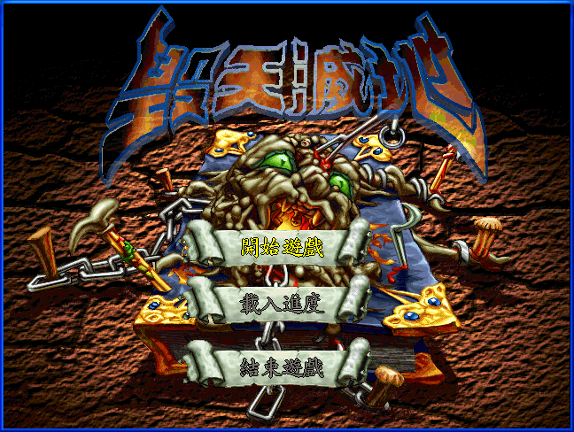
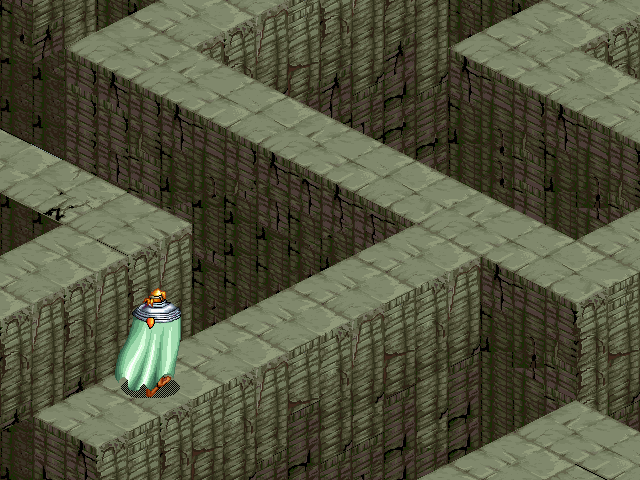
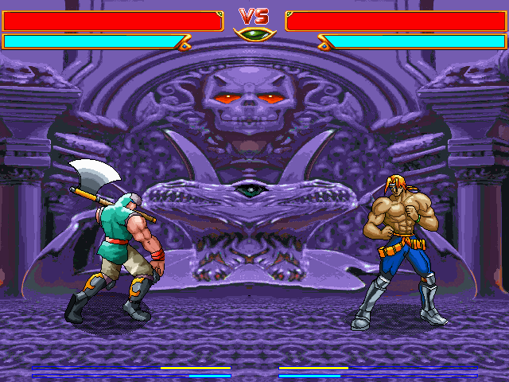

名稱：毀天滅地 (中文版)
簡介：天堂鳥1998年出品的角色扮演遊戲，由智冠代理發行，以斜角3D畫面呈現，即時格鬥
方式戰鬥 [待補]。



保護：光碟
限制：螢幕顯示必須設定為256色，可進行下列修改略過檢驗：
FIGHT.EXE
08 74 0D 68
-- EB -- --
備註：建議使用PCem+Win98系統執行，否則速度會過快，不好操控。
操作：遊戲不支援滑鼠，請用鍵盤操作。
方向鍵 = 移動
1～4 = 攻擊招式
Space = 動作（開寶箱等）
Esc = 系統選單